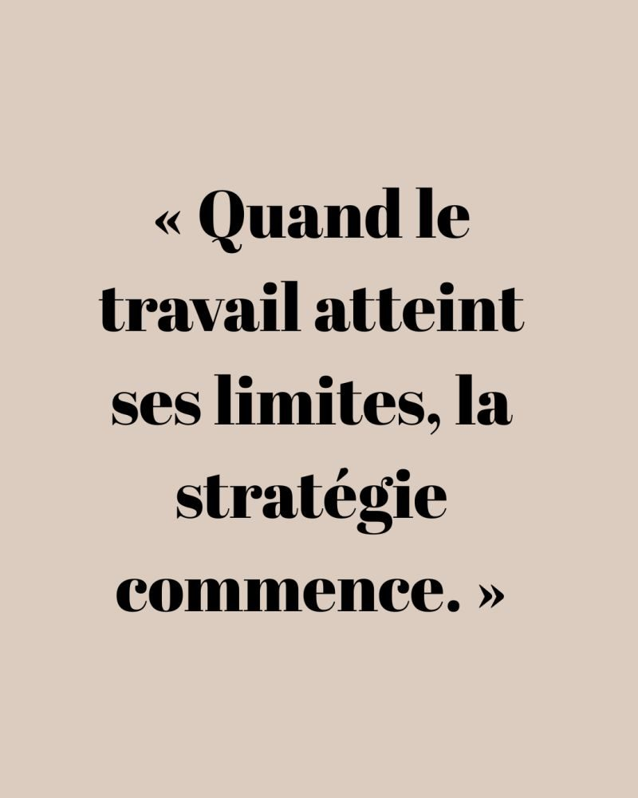

Selon un sondage Elabe pour BFMTV (février 2026), 77 % des Français estiment que le travail ne permet plus de s'en sortir financièrement. Seulement 23 % pensent le contraire. Un sentiment largement partagé dans toutes les catégories socioprofessionnelles.
Ce que révèle cette étude
- 1 Français sur 2 cite l'optimisation du budget comme principal levier d'amélioration du niveau de vie
- L'investissement (immobilier et placements financiers) est jugé plus efficace que le fait de « travailler plus »
- Une forte méconnaissance de l'écart brut/net pèse sur la perception du salaire réel
Ce que cela signifie pour votre patrimoine
Ce sondage confirme une évolution profonde : la recherche d'efficacité financière dépasse désormais la simple augmentation des revenus professionnels. Structurer, comprendre et optimiser ses choix financiers devient essentiel.
Après le constat, vient le temps de l'action. Les leviers existent : optimisation fiscale, placements adaptés, stratégie patrimoniale cohérente. Encore faut-il savoir lesquels activer en fonction de sa situation.
Envie d'y voir plus clair ?
Je vous propose un diagnostic objectif et gratuit pour construire une stratégie patrimoniale cohérente avec vos objectifs.
Prendre rendez-vous